|
VVV
- Fortuna Sittard (3-1) 19 januari 2007
|
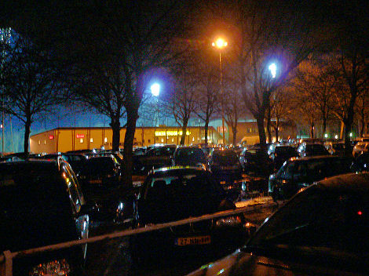
De Koel loopt voller dan normaal bij deze derby. Op dit moment klinkt reeds
gejuich vanwege een dubieuze openingstreffer door Ofrany. In de achtste minuut
scoorde hij via de onderkant lat. De grensrechter dacht van niet, de scheids
oordeelde anders; 1-0.
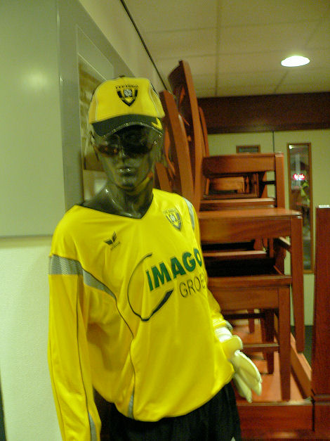
De kassa's sluiten vroeg in Venlo maar bij de administratie gaat de verkoop voor
laatkomers nog even door.
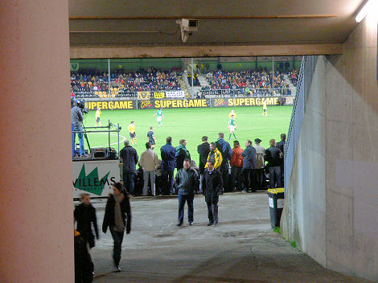
Bij binnenkomst in het Seacom stadion blijkt de sfeer er goed in te zitten.
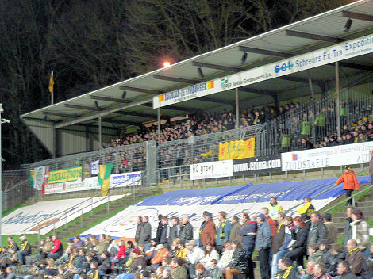
De sfeer werd gedurende de gehele eerste helft uitsluitend door de supporters
van
Fortuna gemaakt. Vanuit het bomvolle uitvak weerklonk een mooi gevarieerd
zangrepertoire.
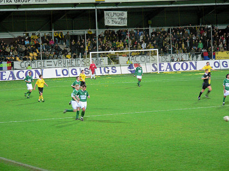
De VVV harde kern protesteerde met diverse spandoeken tegen de verplichte
combi naar Helmond.
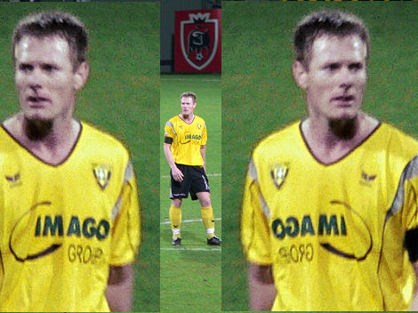
De shirts van VVV zijn een drama. Dit is Frank van Kouwen.
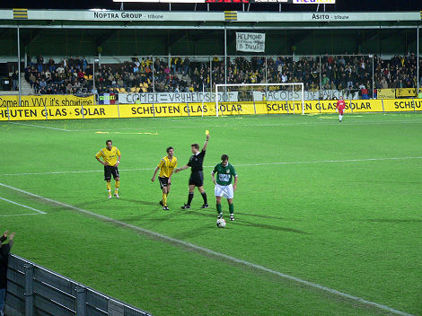
Fleuren krijgt geel.
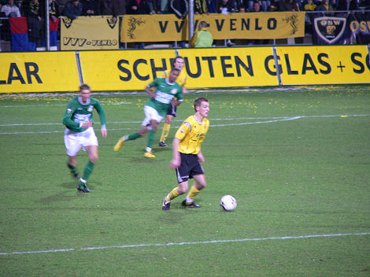
Willem Janssen in actie.
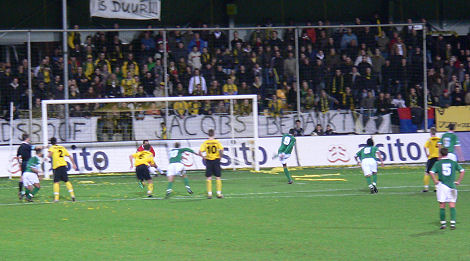
Vlak voor rust krijgt Fortuna een strafschop die snoeihard in de linkerbovenhoek
wordt geschoten door Cornelia: 1-1, (41').

Groot feest in het Fortuna-vak.
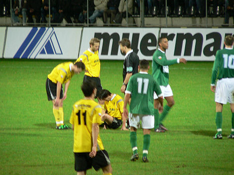
Niemand stortte zo vaak ten aarde als oud-Rodaspeler Dirk-Jan Derksen.
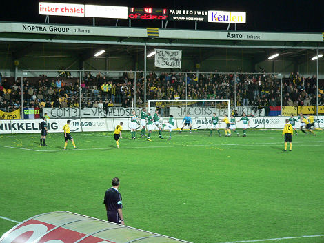
Fortuna dat in de eerste helft een licht overwicht had werd na de
pauze steeds
vaker overlopen door een feller VVV. Hier een vrije trap van Van
Kouwen.
Sir Andrew wil dat Buikema gewisseld wordt.
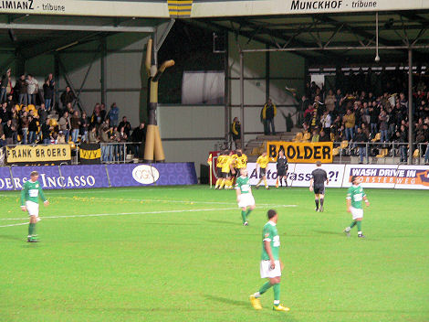
Trainer Wetzel luistert en vervangt Buikema voor Kantelberg die prompt scoort:
2-1, (67'). 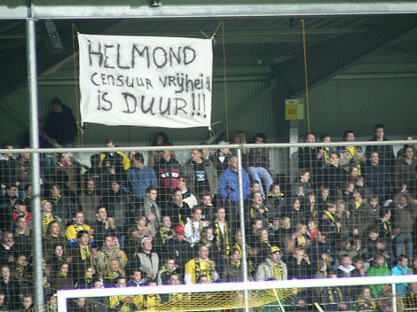
De supporters van VVV blijken ook te kunnen zingen.
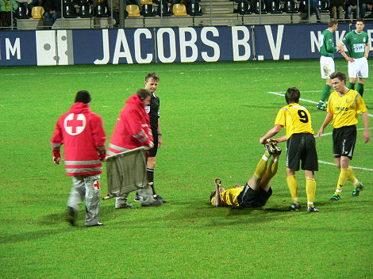
Ernstig uitziende blessure Van Kouwen maar het is slechts kramp.
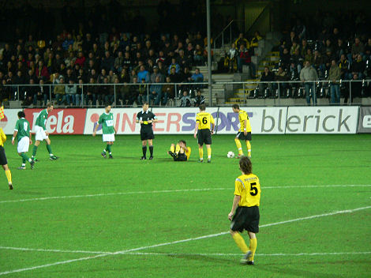
In deze dynamische wedstrijd met hoge amusementswaarde vielen er behalve voor
Fleuren van VVV, gele kaarten voor Garritsen, Heinrichs en Christianen, allen
van
Fortuna Sittard.
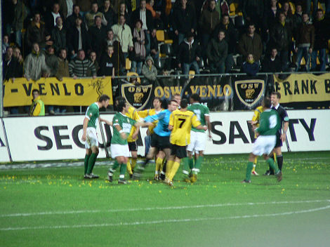
Na een overtreding op een VVV-speler volgt er een massaal opstootje.

In de 88e min. beslist Willem Janssen de wedstrijd: 3-1.
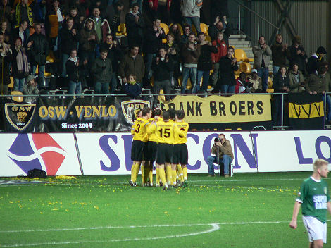
Zelfs de stadionspeaker in de Koel raakt buiten zinnen.
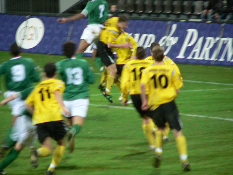
Fortuna komt nog enkele malen dichtbij een tegentreffer maar de wedstrijd
eindigt
in een verdiende zege voor VVV dat de tweede helft volkomen domineerde.
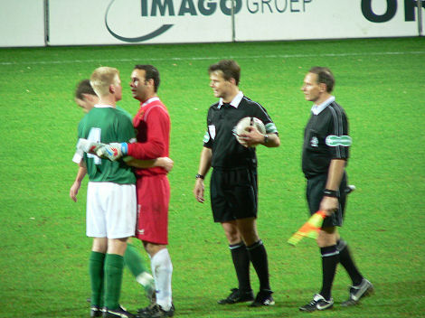
Scheidsrechter Kuipers kijkt geamuseerd toe hoe doelman Baart een Fortunees
troost. 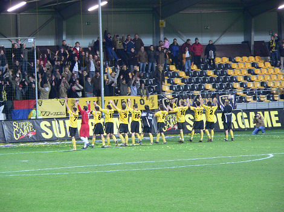
VVV wint, maar Go Ahaed Eagles pakt de periode. Een derby in de Koel blijft een
aanrader voor de "neutrale" toeschouwer ondanks de forse prijzen van 8 euro voor
een onoverdekte staanplaats en 3 euro voor 0.4 l evenementenbier.
© Koempels Pleasure Dome
|